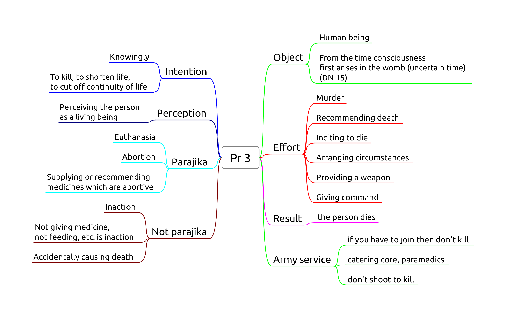
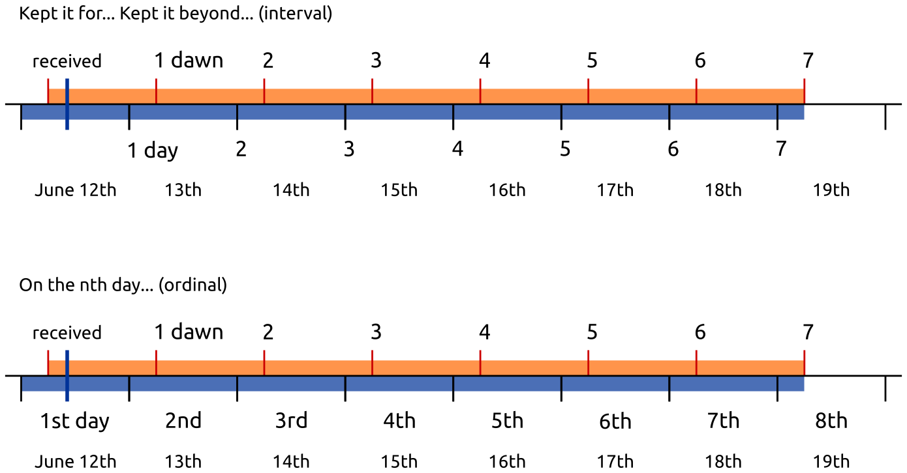

Read here or download as PDF below for printing.
- schedule.pdf
- vinaya-class-notes.pdf
- chanting-refcard.pdf
- chanting-refcard-4on1.pdf
- vinayakamma-chart.pdf
Schedule

Notes

Chanting Refcard

Vinayakamma

Introduction
- Pāṭimokkha: 227 rules, 4 entails automatic expulsion (defeat)
- They contain moral principles, sense restraint, situational protocols, etiquette
- No physical punishment but procedures, forfeit, confession
- The Buddha established the rules one at a time
- Dhamma-Vinaya, Teaching and Discipline
- Each rule includes its origin story, amendments and exceptions
- 5 factors: object, effort, intention, perception, result
- Blanket exemptions: insane, possessed by spirits, delirious with pain, the first offender
- Common non-offences: unknowingly, unthinkingly, unintentionally
- 4 Great Standards to judge modern cases
- Min. 4 bhikkhus for Sangha actions and decisons
- Ordination requires min. 5 bhikkhus
- Disrobe at free will but follow the correct procedure
- 'Kor wat' house-rules per monastery
- International agreements (Mahathera Samakorn, ECM)
The ten reasons for the establishing of the Pāṭimokkha:
- "For the excellence of the Sangha;
- for the wellbeing of the Sangha;
- for the control of ill-controlled bhikkhus;
- for the comfort of wellbehaved bhikkhus;
- for the restraint of the āsavā in this present state;
- for protection against the āsavā in a future state;
- to give confidence to those of little faith;
- to increase the confidence of the faithful;
- to establish the True Dhamma;
- to support the Vinaya."
(Vin.III.20; A.V.70)
Four things not to be done, akaraṇīya:
- sexual intercourse: as a man with his head cut off cannot live
- theft: as a withered leaf separated from its stalk cannot become green again
- depriving a human being of life: as a flat stone, broken in half, cannot be put together again
- claiming false attainments: as a palm tree, cut off at the crown, is incapable of further growth

The Four Great Standards
Not already prohibited:
if it conforms with what is prohibited,
or it goes against what is allowable,
that is prohibited.
Not already prohibited:
if it conforms with what is allowable,
or it goes against what is prohibited,
that is allowable.
Not already allowed:
if it conforms with what is prohibited,
or it goes against what is allowable,
that is prohibited.
Not already allowed:
if it conforms with what is allowable,
or it goes against what is prohibited,
that is allowable.
(Mv.VI.40.1)
Killing and Harming
- Pr 3, Killing a human being
- Pc 61, Killing an animal
- Pc 20, Pouring water containing living beings
- Pc 62, Drinking water containing living beings
- Pc 10, Digging soil
- Pc 11, Damaging living plants or seeds
Pr 3, Killing a human being

Origin: bhikkhus develop aversion to the body and kill themselves or ask an assassin to kill them.
Recommending euthanasia can be parajika if the instruction is followed.
Pc 61, Killing an animal
Giving an order fulfils effort. Result is a factor.
Doesn't include animals smaller than visible to the naked eye. Doesn't include accidents (sweeping).
Pc 20, Pouring water containing living beings
Knowing they will die from pouring it. It can also include knowingly adding poisonous substances.
Giving an order fulfils effort.
Result is not a factor. Doesn't include accidents.
Can't water plants if one plans to eat its fruit, but may indicate it for others.
Pc 62, Drinking water containing living beings
Knowing they will die from drinking it, even accidentally.
Using water strainers or robe. Determining a corner of the sanghati as a water-filter.
Result is not a factor.
Pc 10, Digging soil
Origin: relates to the ancient belief that soil is alive, and loses life when dug up.
Object: 'genuine' soil.
Not genuine soil:
- pure or mostly rock, stones, gravel, sand
- burnt or already dug up soil
- until rained on for four months
- dust from wind erosion
Effort: Digging, burning, making a hole, or giving command to do it.
Putting tent pegs in the ground is to be confessed.
Non-offenses:
- unknowingly, unthinkingly, unintentionally
- indicating a general need or task
- digging a trapped person or animal out
Allowance to indicate a need or general task to a lay person by "wording it right."
The expression kappiya-vohāra ("allowable expression," or "wording it right") is used where an express command would be an offense, but an indication of a desire or intent would not.
Pc 11, Damaging living plants or seeds
Origin: a bhikkhu cuts down a tree where a deva was living. The rule is formed later, when people complained of the bhikkhus mistreating one-facultied life.
Object: Living plant or seed. Lower plant life (i.e. mold, algae, fungi) is not included.
Effort: cutting, breaking, cooking, or getting others to do it.
Fruit with seeds: allowance to make allowable (kappiyam). Fruit can be kappied in one "heap".
To 'kappi' fruit is about the feelings of the donor, not killing the fruit or transfering kamma.
Knowingly eating un-kappied seeds is dukkata.
Non-offenses:
- unknowingly, unthinkingly, unintentionally
- asking a lay person for flowers etc. in general, or indicating a general task
- can cut a trapped person or animal out
- counter-fire
Note: Pc 10 and Pc 11 prevents bhikkhus from engaging in agriculture, which is probably part of the intended results, although not their direct origin.
Stealing
- Pr 2, Stealing
- NP 25, Snatching back robe
- Pc 59, Using cloth or bowl under shared ownership
Pr 2, Stealing
See maps Pr 2 and Pr 2 -- Effort.
NP 25, Snatching back robe
Object: a piece of robe-cloth, at least 4x8 fingerbreadth.
Perception: one still considers the robe as one's own, otherwise it could be parajika.
Intention: impelled by anger or displeasure. Taking it on trust is not an offense.
Effort: snatching back or having someone to snatch it back.
Dukkata for:
- giving the command
- other than cloth
- snatching from a non-bhikkhu
- hinting with anger
Non-offenses:
- recipient returns the robe on his own accord
- donor takes it back on trust
- hinting without anger
Pc 59, Using cloth or bowl under shared ownership
Vikappana is an arrangement whereby a bhikkhu places robe or cloth under shared ownership so that it may be stored for any length of time.
If the bhikkhu simply gives the robe back to the stores, he has given up ownership of it and another bhikkhu would be free to take it.
Vikkappana allows a bhikkhu to determine a smaller sanghati while travelling, but not entirely giving up his regular sanghati.
Object: robe-cloth, min. 4x8 fingerbreadths, that one has placed under shared ownership.
Perception of ownership is not a factor.
Effort: using the cloth without the ownership being rescinded.
Non-offenses:
- rescinded ownership
- using it on trust (shared with friends)


Sexual Conduct
- Pr 1, Sexual intercourse
- Sg 1, Intentional emission of semen
Pr 1, Sexual intercourse

- as a man with his head cut off cannot become one to live again
- as a withered leaf separated from its stem cannot be joined again
- as a flat stone that has been broken in half cannot be put together again
- as a palmyra tree cut off at the crown is incapable of further growth.
Sg 1, Intentional emission of semen

A bhikkhu who comitted a sanghadisesa must inform another bhikkhu as soon as possible, but at most until the next dawnrise. The Sangha must meet and at his request, allow a six-day period of penance (mānatta). If he concealed the offence, a probation period (parivāsa) is required beforehand.
He may choose where to observe the penance, but he can only be rehabilitated as a bhikkhu in regular standing by a community meeting of at least 20 bhikkhus.
Lustful Conduct
- Sg 2, Lustful contact with a woman
- Sg 3, Speaking lewd words to a woman
- Sg 4, Praising sexual intercourse as gift
- Pc 7, Teaching more than six sentences
Sg 2, Lustful contact with a woman
Origin: Ven. Udayin disturbing a bhrahmin's wife while they are visiting him.
Object: a living woman, "even one born on that day." Body, hand, limbs, a lock of hair, etc.
Perception: perceiving her to be a woman.
Intention: impelled by lust, any state of passion, desire to enjoy the contact. Can be an extended period of desire, or a momentary attraction.
Contact out of filial affection for family members is a dukkata.
Effort: physical contact.
Items she is wearing are direct contact.
Indirect contact:
- touching a item which she is holding: thullacaya
- touching her with an item one is holding: thullacaya
- item to item: dukkata
- tossing: dukkata
- shaking sth. she is standing on: dukkata
Passive contact:
Contact while trying to shake her off is not an offense.
If the bhikkhu's aim is to partake, the offence is sanghadisesa.
Non-offenses
- unintentionally
- unthinkingly
- unknowingly
- the bhikkhu doesn't give his consent
- no desire for the contact
- has desire, but makes no effort
Sg 3, Speaking lewd words to a woman
Wanting to enjoy saying something lewd. Directly referencing her genitals, anus, or her performing sexual intercourse. Slang, euphemisms, non-verbal gestures fulfill effort.
Object: Any woman who recognizes lewd comments.
May not know: too young, too innocent or retarded, or doesn't know the language.
Perception: The bhikkhu perceives her to be a woman.
Intention: Impelled by lust. The minimum lust is wanting to enjoy saying something lewd.
- not necessary to have desire to have sex with her
- statements in anger come under Pc 2 instead
Effort: Praising, criticizing, asking, etc. referencing her genitals, anus, or her performing sexual intercourse.
- direct mention of above
- indirect references, slang, euphemisms, non-verbal gestures fulfill effort
Another person's private parts don't fulfill effort.
Result: The woman immediately understands.
If she only understands later:
- thullacaya if it was a direct reference
- dukkata if it was indirect
Non-offenses
- speech aiming at spiritual welfare, if not out of lust
- the bhikkhu doesn't intend to be lewd, but the woman takes it as lewd
Sg 4, Praising sexual intercourse as gift
A variation on lewd speech.
Directly countering the notion that "giving" sex as a spiritual gift brings good karmic rewards.
Intention is fulfilled simply by the desire to enjoy making such remarks in the presence of a woman, even if just to test her reactions.
Pc 7, Teaching more than six sentences
Origin: Ven. Udayin whispers Dhamma sentences in the ears of certain women.
One should ask a man to chaperon when engaging in a conversation or interview with women.
The rule is aimed at preventing a bhikkhu from using his knowledge of Dhamma as a way of making himself attractive to a woman.
Other topics have no penalty, but indulging in 'animal talk' with lay people may result in censure, banishment or suspension on grounds of 'unbecoming assoication with householders' or 'verbal frivolity.'
Also, observers might misinterpret the situation, best to ask someone to chaperon.
Private conversations in general are treated in Pc 44, Pc 45, Ay 1, Ay 2.
Object: Any woman who recognizes lewd comments.
Perception is not a factor.
Effort: Teaching more than six sentences of Dhamma without a knowledgeable man present.
Non-offenses
- if the woman changes position
- talk on different occations
- addressing the next woman
- teaching someone else, and the woman just listens in
- teaching in response to questions from the woman
Women 1
- Sg 5, Conveying romantic messages
- Pc 6, Lying down with a woman
- Pc 44, Private secluded place
- Pc 45, Unsecluded but private place
- Pc 67, Travelling by arrangement with a woman
Sg 5, Conveying romantic messages
Only two factors: effort and object.
Effort: 'Conveying' messages for any romantic purpose from a momentary date to a wedding. Not business meetings.
Three stages:
- accepting the request to convey a message
- inquiring at the second party
- reporting the response
Dukkata for any single stage, thullacaya for any two, sanghadisesa for all three.
Carrying a letter without knowing the content doesn't fulfill effort.
Object: A man and a women who are not married to each other, even if dealing with them via other people.
Reconciling a still married couple is not an offense. Reconciling a divorced couple is sanghadisesa.
Non-offenses: messages about non-romantic errands, e.g. community business, a shrine, a sick person.
Pc 6, Lying down with a woman
Object: Female human being, even a baby, one's relative or not.
Effort: in the instant one lies down in the same dwelling when a woman is lying down.
Same dwelling: one "enclosure". Technically the same walls and roof, but one may consider variations (private hospital rooms).
Intention is not a factor, pacittiya even if the bhikkhu doesn't know about the woman.
Purpose: to avoid situations where people might think that one may have commited serious offenses. Other people might see the situation and rumors would be damaging.
Non-offenses for roofed but no walls (pavilion) or walled but not roofed (corral), but a good idea to avoid nonetheless.
Pc 44, Private secluded place
The bhikkhu sits with a woman at a secluded place, private to the eye and ear, without another man present, aiming at privacy.
No offence if the woman entered the room later, and he didn't notice.
Pc 45, Unsecluded but private place
The bhikkhu sits with a woman at a private, but not secluded place, such as an empty park, without another person present.
Pc 67, Travelling by arrangement with a woman
Origin: a woman hears that a monk is going to a village and goes with him. Later, the woman's husband heard about it and gave him a beating.
Purpose: to avoid people assuming the bhikkhu having an affair with the woman.
Object: Any woman who knows what is lewd.
Perception is not a factor.
Effort:
- having made an arrangement to travel together
- they travel as arranged
- time frame as arranged
- route or place of departure doesn't count
- from one village to another (half-yojana, 8km)
Making an arrangement: both gives verbal or written assent to the arrangement.
Giving assent in silence is not an offense.
- if the women doesn't respond: dukkata
- if the bhikkhu doesn't respond: no offense
Non-offenses
- coincidence: they happen to travel together
- the woman proposes the arrangement, and the bhikkhu doesn't give verbal assent
- leaving at a significantly different time than as arranged
- there are dangers
Cases
- public transport
- private transport (Pc 44)
False Speech
- Pc 1, Intentional lie
- Sg 8, Unfounded parajika accusation
- Sg 9, Distorting evidence
- Pc 76, Unfounded sanghadisesa accusation
- NP 30, Diverting an offering for oneself
- Pc 82, Diverting an offering for oneself
Pc 1, Intentional lie
Origin: Ven. Hatthaka defeats philosophical opponents by means of lying.
Intention: to misrepresent the truth
Effort: to communicate it to sb. based on that aim
Result is not a factor. It doesn't matter if the listener believes it or not.
Telling a conscious lie means: the words, the utterance, the speech, the talk, the language, the intimation, the (un-ariyan) statements of the person intent upon deceiving with words.
Dukkata for remaining silent when it implies a false message (e.g. during Patimokka recitation).
Dukkata for broken promises, where one is making the promise with pure intentions but later breaking it.
Non-offenses
- unintentionally,
- speaking in haste (unconsidered)
- slip of the tongue (stupidity or carelessness)
Jokes
Humorous, witty remarks which are true statements are not criticized even by the Buddha. There are cases of his humour in the suttas.
Irony, sarcasm, satire, boastful- and playful exaggeration are confusing because one makes physical signs to represent a false statement (effort).
One may claim not intending to lie, but one's intention is often ambigous (jolly bantering, wanting to avoid a situation).
Result is not a factor, but others might miss the irony while picking up the resentment or malice.
The Commentary's examples:
A novice asks a bhikkhu:
- Have you seen my preceptor?
- Your preceptor's probably gone, yoked to a firewood cart.
A novice, on hearing the yapping of hyenas:
- What's making that noise?
- That's the noise of those who are lifting the stuck-in-the-mud wheel of the carriage your mother's going in.
The Commentary assigns offence for these and other examples which could be exaggeration or sarcasm.
Note the Buddha's instruction to Rahula: "Train yourself, 'I will not utter a deliberate lie, even for a laugh.'"
Intention is fulfilled when the speaker wants the listener to believe a false statement, even if for a second, even while planning to reveal that one is only joking.
Practical jokes are pacittiya (e.g. telling sb. that their robes are lost to see their reaction).
Satire and boastful exaggeration are pacittiya.
Irony, sarcasm, playful exaggeration can sometimes fulfill intention, sometimes not. Such remarks are often made as a manner of speaking without the intention to deceive.
Example at Pr 2: a bhikkhu puts away sb's item for safe-keeping. When the person is looking for it, he ironically responds "I stole it." The Buddha says the bhikkhu committed no offence, as it was only a manner of speaking, not an acknowledgement of theft.
Robes 1
- NP 1, Keeping robe cloth for more than 10 days
- NP 2, Separated from robe
- NP 3, Out of season robe cloth
- NP 6, Asking for robe cloth
- NP 7, Excess robe cloth
- NP 8, Request to improve robe
- NP 9, Request to combine robe funds

NP 1, Keeping robe cloth for more than 10 days
Encouraging modesty to avoid hoarding requisites.
Object: a piece of cloth which could be used for making part of a robe, at least 4 x 8 inches.
It has to be a suitable material for bhikkhus. Leather is unsuitable. Black, blue, crimson are not suitable colours for a robe.
Effort: keeping it for more than ten days without determining it for use.
Perception is not a factor, mis-counting the days is not an excuse.
If the robe develops a hole, it loses its determination. It has to be mended within 10 days, and determined for use again.
Holes which are small, or located within a hand-span along the edge don't cause the determination to lapse, but when mended, may require the robe to be re-determined.
Robe-season: 4th lunar month of Vassana, from the full moon in October. During that time one may receive and keep robe-cloth for more than ten days.
NP 2, Separated from robe
Object: either one of the bhikkhu's currently determined three main robes, the antaravāsaka (sabong, lower robe), uttarāsaṅga (jiwon, upper robe), and saṅghāṭi (outer robe).
This rule doesn't apply to other cloth requisites, such as a work-sabong or an old jiwon used as a bedsheet.
Effort: at dawnrise (civil twilight), being outside of 'the same area' than where one's robes are located.
'The same area' may be within hatthapasa (arm's reach), in the same room, building, or the monastery grounds, depending on the local kor-wat.
Exception during the robe-season, if one is eligible for kathina privileges, and unless one has relinquished those privileges.
NP 3, Out of season robe cloth
Extra robe-cloth may be kept for up to 30 days, when it is not enough for a robe, and one is expecting to receive more cloth later.
NP 6, Asking for robe cloth
Asking a lay supporter who is not a relative, for robe-cloth, except when one's robes have been stolen or destroyed.
A bhikkhu who arrives at a monastery with no cloth to cover himself may take any cloth he finds to wear, if he intends to return it when he obtains a proper robe.
NP 7, Excess robe cloth
When one's robes have been stolen or destroyed, one may ask for cloth at most the amount enough for an upper- and lower robe.
There is no offence for accepting cloth when the donors are offering it for a different reason.
NP 8, Request to improve robe
An unrelated householder wishes to purchase robes for the bhikkhu, and he suggests purchasing a more expensive one.
No offence when the lay person is a relative, or has invited one to ask for cloth.
NP 9, Request to combine robe funds
As NP 8, but in this case two householders are offering to sponsor individual pieces of robe, and the bhikkhu suggests them to purchase a more expensive robe by combining their funds.
Attainments
- Pr 4, Lying about superior attainments
- Pc 8, Telling unordained person about actual attainment
Pr 4, Lying about superior attainments
Extreme of lying. Pc 1 - lying
Object: superior human state
- absorption, jhana
- vimokkha, sunnyata
- samadhi
- past lives
Perception: as not present in oneself. Could be overestimation.
Effort: addresses a human being, state withing oneself, one being in the state.
Intention: to misrepresent the truth, motivated by an evil desire.
- knowing that it is a lie
- did not intend to boast
The listener must undestand enough to know it is a claim.
Lay supporters may address a teacher with exaggerated faith, he must be careful how he respond.
Pc 8, Telling unordained person about actual attainment
Effort: reporting
Object: unordained person
Non-offense:
- bhikkhu or bhikkhuni
- display of psychic power
Robes 2
- NP 24, Seeking for a rains-bathing cloth
- NP 28, Keeping robe cloth offered in urgency
- NP 29, Separated from in a dangerous place
- Pc 58, Unmarked robe
- Pc 89-92, Proper robe sizes
NP 24, Seeking for a rains-bathing cloth
A servant girl goes to the monastery and sees the bhikkhus bathing in the rain. She returns to Lady Visakha, and tells her that there were no bhikkhus there, only naked ascetics. She asks the Buddha for permission to provide rains-bathing cloth for the bhikkhus.
The proper time to seek a rains-bathing cloth is the last month of the hot season. It may be worn in the last half-month of the hot season and during the rains season.
One may ask relatives, or supporters who have provided such cloth in the past.
NP 28, Keeping robe cloth offered in urgency
The robe-season begins with the full moon of Kattika in October, but if a supporter has urgent reason and can't wait until that time, the bhikkhus may accept robe-cloth from him 10 days prior, and keep it until the end of the robe-season.
NP 29, Separated from in a dangerous place
During the month after the Kattika full moon, a bhikkhu who lives in a dangerous wilderness, may keep either one of his robes in the village, for up to six days. The Sangha may authorize a longer period.
Pc 58, Unmarked robe
When a bhikkhu receives a new robe, he should mark it for easy identification, before determining it for use.
A green, blue, brown or black mark is suitable.
It is suitable to make three small dots in one corner of the robe, saying, "Imaṁ bindu-kappaṁ karomi," (I make this properly marked) while making each dot.
There is no need to make a new mark if it wears off, or if the robe has already been used (and marked) before.
It is suitable to mark any cloth item (angsa, bags, hats) which one wears on the body.
Pc 89-92, Proper robe sizes
Pc 89, sitting cloth: 2 x 1.5 span + 1 span border
Pc 90, skin-eruption cloth: 4 x 2 span
Pc 91, rains-bathing cloth: 6 x 2.5 span
Pc 92, robe: 9 x 6 span
Misc
- Pc 2, Insult
- Pc 3, Telling a bhikkhu about an insult
- Pc 46, Visiting families without informing
- Pc 85, Entering a village without informing
- Pc 56, Lighting a fire
- Pc 57, Bathing in the middle Ganges Valley
- Pc 66, Travelling by arrangement with thieves
- Pc 84, Picking up a valuable
Pc 2, Insult
- Effort, face-to-face insult in the topics of abuse
- Object, a bhikkhu
- Intention, to humiliate him
The ten topics of abuse (akkosa-vattu) are pacittiya, other topics are dukkata.
Critical or joking remarks on the ten topics, when not meant as an insult, are dubbhasita.
Indirect- or insinuating remarks, if meant as an insult, are dukkata.
Non-offenses: aiming at Dhamma, aiming at the person's benefit.
Pc 3, Telling a bhikkhu about an insult
One hears remarks about a bhikkhu in the ten topics, and one repeats it to another.
Hoping to cause a rift, loss of respect, etc.
False tale-bearing is Pc 1.
Pc 46, Visiting families without informing
After dawn, before midday, when invited to a meal, one enters a family residence without taking leave of an available bhikkhu, except during the right times.
Right times: the robe season, or when one is making a robe.
The principle of Pc 46 and Pc 85 is to stop bhikkhus spending their time in inappropriate ways at lay people's homes.
Pc 85, Entering a village without informing
After midday, before dawn, without informing an available bhikkhu, except for emergencies.
Village, cities, etc., any large inhabited area.
One may take leave in any understood language.
Treating the response with disrespect is Pc 54.
"Vikāle gāmappa-vesanaṃ āpucchāmi."
"Vou à cidade na hora errada."
"A városba megyek a rossz időben."
"I am going into the village at the wrong time."
Pc 56, Lighting a fire
Lighting a fire, or getting it lit, when one is not ill for warming oneself, unless there is a suitable reason.
Allowance for wording it right.
Perception of one being ill or not is not a factor.
One should be sure that the extra warmth is necessary for one's health before lighting a fire.
Lighting a fire in the sauna is not an offence.
Pc 57, Bathing in the middle Ganges Valley
Origin: King Bimbisara waited for the bhikkhus to finish bathing at the hot springs. They saw the king, but kept bathing until nightfall. When the king finished, the city gates were already locked.
The original formulation was later relaxed.
Pc 66, Travelling by arrangement with thieves
One has to know that they have committed or planning to commit a theft, and the arrangement has to be mutual.
Note: travelling with sb whom one knows is going to try to avoid paying customs.
Pc 84, Picking up a valuable
Origin: a bhikkhu picks up a brahmin's money-bag who forgot it at the river bank. When he gives it back, the brahmin claims it had more money in it.
The purpose is to avoid getting mixed up in cases of ownership and value of property.
Valuable or what is considered a valuable.
Outside a monastery, one should leave the valuables where they are.
One may wait at the item until the owner appears.
Inside a monastery, one should pick them up and put them away for safe keeping. This includes money.
One should take note of the features of the item, and confirm the true owner.
Food 1
- Pc 31, Public alms centre
- Pc 37, Eating at the wrong time
- Pc 38, Stored food
- Pc 40, Unoffered food
- Pc 51, Intoxicants
- Pd 4, In a forest dwelling
Money
- NP 10, Fund with steward
- NP 18, Gold, silver and money
- NP 19, Selling or buying
- NP 20, Trade
Women 2
- Ay 1, sitting privately with a woman
- Ay 2, sitting out of earshot with a woman
- Bhikkhunis, Summary of related rules: NP 4-5, NP 17, Pc 21-30, Pd 1-2.
Food 2
- NP 23, Over-kept tonics
- Pc 39, Requesting finer staple foods
- Pc 47, Exceeding an invitation
- Pc 41, Handing food to members of other religions
- Pd 3, Protected families
NP 23, Over-kept tonics

Object: any of the five tonics.
Effort: one keeps the tonic past the 7th dawnrise after receiving it.
Perception is not a factor.
If one thinks the 7th dawn haven't passed, but it has, it is still NP.
If one thinks "I receive this salt as food for the morning, and this salt as medicine for later", it may be a personal practice, but not part of the rule. It doesn't affect the period of how long the item may be used by oneself or any other bhikkhu.
Mixing: The mixture takes on the shortest lifetime of the ingredients. (Mv. VI.40.3.)
| a. | 1d juice | rec. that morning | + | food | rec. that morning | → | that morning |
| b. | 7d tonic | rec. that morning | + | food | rec. that morning | → | that morning |
| c. | lifetime medicine | rec. that morning | + | food | rec. that morning | → | that morning |
| d. | 7d tonic | rec. sometime | + | juice | rec. that day | → | until dawn |
| e. | lifetime medicine | rec. sometime | + | juice | rec. that day | → | until dawn |
| f. | lifetime medicine | rec. sometime | + | 7d tonic | rec. sometime | → | 7 days |
7 days
Sattāha paramaṃ, "up to seven days". The Vinaya counts days from dawn to dawn, hence one may use a 7 day tonic until the 7th dawn.
Confusion arises from "7 days" meaning either "for 7 days" (interval) or "on the 7th day" (ordinal).

Breakfast tray
After dawn, one receives a tray with bread, jams, honey, butter and salt. At this point the lifetimes are:
- bread, jams: morning
- honey, butter: 7 days
- salt: lifetime
If the knife which one used carries bread morsels or jam into the honey or the butter, these will be only allowable in the morning.
If one is careful to clean the knife and avoid mixing, one may use them on the bread and keep the rest until their allowed lifetimes.
The next day, one receives a tray with only bread. One may not mix the allowables from the previous day with the food received today.
Putting the salt, honey or butter (rec. yesterday) on the bread would be Pc 38 (eating stored food).
Pc 39, Requesting finer staple foods
Finer staple foods: ghee, fresh butter, oil, honey, sugar, fish, meat, milk, curds.
Object, effort, result.
Sk 37 covers non-fine staples: "Not being ill, I will not eat rice or bean curry that I have requested for my own sake: a training to be observed."
Hence, dukkata for requesting and consuming other staple foods, except when one is ill.
Non-offenses
Not ill: one is able to fare comfortably without these foods.
- being ill
- was requested for the sake of an ill bhikkhu, and is now left over
- from relatives
- from those who gave invitation to ask
- for the sake of another
- from one's own resources
Pc 47, Exceeding an invitation
When an invitation is made that one may ask for certain requisites, one may use it until four months, unless it has been repeated, or is a permanent invitation.
Non-offenses
- from relatives
- for the sake of another
- from one's own resources
- being ill, if one shows consideration
"The time period for which we were invited has passed, but we have need of medicine."
Pc 41, Handing food to members of other religions
One places oneself in the position of the followers of other religions.
It is not an offense to prepare food in a tray and placing it so that they can help themselves.
Pd 3, Protected families
The purpose is to avoid damaging the faith of those supporters who might suffer financially if they give too much.
Non-offenses
- being ill
- invited
- juice, tonics, medicines
- the almsfood is supplied by others
- the family members take turns
- eating the leftovers of another bhikkhu
- the family offers outside their residence
Arguments 1
- Sg 10, Schismatic group
- Sg 11, Supporting a schismatic group
- Sg 12, Not accepting admonishment
- Sg 13, Not accepting a rebuke or banishment
- Pc 9, Telling an unordained person about serious offence
- Pc 12, Evasive reply
- Pc 13, Criticising community official
Dwellings
- Sg 6, Too large hut without sponsor or approval
- Sg 7, Large hut without approval
- Pc 14, Leaving bed or bench
- Pc 15, Spread bedding
- Pc 16, Intruding on bhikkhu's sleeping place
- Pc 17, Causing a bhikkhu to be evicted
- Pc 18, Bed on an unplanked loft
- Pc 19, Supervising the building work
- Pc 87, Tall bed or bench
- Pc 88, Cotton stuffing
Arguments 2
- Pc 54, Disrespectful after admonition
- Pc 64, Concealing another's serious offence
- Pc 65, Ordaining someone less than 20 years old
- Pc 68, Not relinquishing an evil view
- Pc 69, Suspended bhikkhu
- Pc 70, Expelled novice
- Pc 74, Hitting a bhikkhu
- Pc 75, Threatening gesture
Sekhiyas 1
- Sk 1-27, Proper behaviour
- Sk 73-75, Toilet etiquette
Excuses
- Pc 71, Ploy to avoid criticism
- Pc 72, Criticising the rules
- Pc 73, Claiming ignorance
Food 3
- Pc 32, Four bhikkhus specifically invited
- Pc 33, Meal before invitation
- Pc 34, More than three bowlfuls
- Pc 35, More food after turning down what was offered
- Pc 36, Tricking to break Pc 35
Bowls
- NP 21, Keeping extra bowl
- NP 22, Asking for new bowl
- Pc 60, Hiding another's requisites
- Pc 86, Needle box
Misc
- Pc 48, Watching battle
- Pc 49, Staying with army
- Pc 50, Going to and army practice or review
- Pc 52, Tickling
- Pc 53, Playing in water
- Pc 55, Attempting to frighten
Pc 48, Watching battle
Going to a battlefield to watch an army was a form of entertainment for non-military citizens. Actual battle was not total warfare, and practice manuveurs were outside the city.
Modern examples would include watching a public demonstration or a live bradcast.
Object: an army on active duty. This is not only battle.
Effort: staying still and watching them is enough.
Intention: to watch them. Going to them for a different, suitable reason is not an offense.
Non-offenses:
- a suitable reason to go to the army (visiting an ill person, shelter from danger, invited for alms or to give a talk)
- having other business, one sees the army
- seeing them from the monastery
- the army comes to where one happens to be
- meeting an army coming from the opposite direction
- there are dangers
Pc 49, Staying with army
If there is a suitable reason to go to an army, one may stay up to three consecutive nights with the army.
The nights are counted as dawns.
Pc 50, Going to and army practice or review
While one is staying with an army, going to a battlefield (war games included), roll call, the troops in battle formation or review.
Public parades, air shows are included.
Example: one visits the army for seeing a dying person. Later, in an informal situation the soldiers are showing the monk how cool their weapons are.
Pc 52, Tickling
A bhikkhu died from being unable to catch his breath while being tickled.
Pc 53, Playing in water
Effort: one jumps up or down, splashes or swims.
Object: the water is at least ankle deep.
Dukkatas: Paddling in a boat, sailing a sailboat or steering a motorboat.
Intention: for fun, for a laugh.
Swimming for fitness is not mentioned, but there were monks known to "keep their bodies in strong shape". Ven. Dabba Mallaputta assigns them to dwellings at the same place.
A medical instruction for swimming would be "having business in the water".
Non-offenses:
- one has business to do in the water or in the boat
- crossing to the other shore
- there are dangers
Pc 55, Attempting to frighten
Intention: to frighten the other person.
Effort: any effort to make arrangements to cause fright, or talking about dangers.
Object: the other person is a bhikkhu. Dukkata for non-bhikkhus.
Perception and Result are not factors.
Non-offenses: without the intention to cause fright.
Sekhiyas 2
- Sk 27-56, Food
- Sk 57-72, Teaching Dhamma
Robes 3
- NP 16, Carrying Wool
- NP 26, Thread
- NP 27, Weavers
- NP 11-15, Summary of santhatas
Arguments 3
- Pc 77, Provoking anxiety about a broken rule
- Pc 78, Eavesdropping in an argument
- Pc 63, Reopen a closed issue
- Pc 79, Complaining about a community decision
- Pc 80, Leaving a community meeting
- Pc 81, Complaining about favouritism
Misc
- Pc 4, Teaching by rote
- Pc 5, Lying down with unordained male
- Pc 42, Sending a bhikkhu away
- Pc 43, Intruding on an aroused couple
- Pc 83, Entering a king's sleeping chamber unannounced
- As 1-7, Summary of settling conflicts
Pc 4, Teaching by rote
Teaching a non-bhikkhu by reciting Dhamma with him line by line. That is, training him to be skilled in recitation.
The offense includes novices.
The intention of the rule is guard the faith of lay people. If a teacher makes mistakes, the student may lose respect for them. If the sessions keep up for a time, the teacher might be seen as hired by the lay person.
Dhamma here means Pali texts, and only those in the Pali Canon.
The definition doesn't include Mahayana sutras, translations and other compositions.
Non-offenses:
- making someone recite in unison with another bhikkhu (student)
- correcting or practicing a passage with a lay person which they are reading or already memorized (evening chanting)
- a bhikkhu learning a passage from a lay person
Pc 5, Lying down with unordained male
Lying down in the same dwelling with an unordained male person for more than three consecutive nights.
The intention of the rule is to avoid the lay people seeing the bhikkhus in unsightly attitudes while sleeping.
The same dwelling: the interpretation is not fixed, as dwellings come in many forms. Ideas used in various situations:
- the same roof
- having a single common entrance
- part of the same enclosure
Sometimes it may be the same building, other times the apartment, other times the room.
Three consecutive nights: counted by dawns. If the bhikkhu or the lay person gets up during the night, the count starts again.
The pacittiya is at lying down at the fourth night.
The lay person may be a different person from one night to the next, but those nights are still consecutive.
Pc 42, Sending a bhikkhu away
Being together (on almsround or other business), sending the other bhikkhu away with the intention to misbehave when being alone.
Object: another bhikkhu.
Intention: one wants to indulge in misconduct and does not want him to see it.
Misconduct: laughing, playing, sitting in private with a woman, etc.
Effort: one dismisses him, sending him away by direct command or indirect remarks
Result: he leaves one's range of hearing and sight.
Non-offenses: dismissing him for a different reason.
Pc 43, Intruding on an aroused couple
Entering or staying in the same private part (bedroom) of the dwelling where at least one of the couple is aroused for intercourse.
Object: the aroused couple.
Effort: sitting in the same private part of the dwelling without another bhikkhu present.
Perception is not a factor. Better ask to make sure one is welcome to stay.
Non-offenses:
- both the man and woman have left the private area
- neither of them is aroused
- the building is not for sleeping
- the bhikkhu is not in the private area
- another bhikkhu is present
Pc 83, Entering a king's sleeping chamber unannounced
Entering the sleeping chamber without announcement one might suprise the couple in an intimate situation.
The situation is relevant when one is on familiar terms with any person of influence. Annoying him, being in a suspicous situation, or meeting enticing circumstances can be dangerous for the bhikkhu.
As 1-7, Summary of settling conflicts
Adhikaraṇa-samatha, 'the settling of issues'. Procedures for settling: a) disputes, b) accusations, c) offenses, d) duties.
1. A face-to-face verdict should be given.
The community must be qualified to carry out the transaction. The individuals involved in the matter must be present. The principles of Dhamma-Vinaya must be the guides for the group.
2. A verdict of mindfulness may be given.
Verdict of innocence, based on that the accused remembers fully that he did not commit the offense.
3. A verdict of past insanity may be given.
Verdict of innocence, based on that the accused was out of his mind when he committed the offense and so is absolved of any resposibility for it.
4. Acting in accordance with what is admitted.
A) Ordinary confession with no formal interrogation.
B) Following an accusation the community interrogates the bhikkhu, he admits doing the action, and the community proceeds according the severity of the offense.
5. Acting in accordance with the majority.
In cases when there is no unanimous agreement among the bhikkhus the decision can be made by majority vote.
6. Acting for his further punishment.
The bhikkhu drags out an issue and only admits to the offense after a formal interrogation. A further punishment must be imposed on the bhikkhu for being so uncooperative.
7. Covering over as with grass.
Both sides realize that they are unable to resolve the dispute and further meetings will only result in greater divisiveness. If both sides agree, they gather in one place with every bhikkhu in the territory present (no one should send his consent). A representative of each side addresses the entire group and makes the blanket confession.
Questions
Introduction
How can the monks determine if a modern item (e.g. credit cards, sun glasses) are allowable or not?
How does one determine whether there is full offence of a rule?
Could the abbot of a small monastery ordain a bhikkhu or samanera? What should he do?
Advice on restoring one's faith after breaking a rule or having done something unbecoming.
Killing and harming
The loved family dog of a lay supporter is very ill, and treatment will be expensive. He asks a monk whether they should ask the vet to euthanise the dog, or apply for treatment.
A woman asks a monk if she should get an abortion. What should the monk say?
A monk discovers a tick on his arm. What should he do?
A monk hits an anagarika. What should the anagarika do?
Stealing
A monk sneaks into the kitchen and eats an apple. Did he steal it?
A lay supporter brings an expensive sweet and gives it to a monk, saying 'I brought this for the abbot'. The monk eats a bit from it before giving it to the abbot. Did he steal it?
A monk is visiting a monastery and makes a long phone call. The call costs 100 EUR. The resident monks discover it on the bill and ask if anyone knows about this call. He remains silent.
How is it possible for a monk to steal from the Sangha?
A monk drives away with the monastery car and never comes back. Consequences?
Lustful conduct
A monk curses with lewd words in front of a woman.
A married couple wants to ask a monk how to live together peacefully.
A monk is carrying a table with a woman and he playfully pushes it into her.
A monk receives treatment on his tooth from a female dentist.
A monk is trying on shoes in a shop. A female assistant helps to put on a shoe and she asks, "Is that comfortable?"
Women 1
A monk is travelling by train, sitting in a compartment alone. At one of the stops a woman enters and takes a seat in the compartment.
A monk stays at his parents' house for a night.
A monk is travelling by bus to visit a friend. He arrives at the bus station, and the girlfriend of his friend is there with a car to pick him up. She asks the monk to call his friend and tell him she will be back at their apartment shortly.